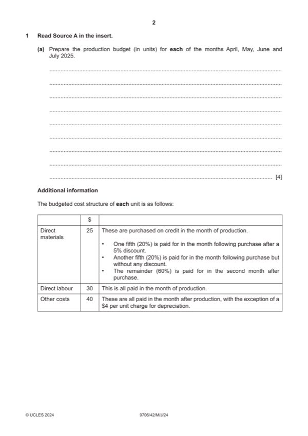

Question 1

Original paper page 2
Part 1(a) — solution
Prepare the production budget (in units) for each of the months April, May, June and July 2025. 4
April May June July
Sales 1 000 1 200 1 500 1 300 (1) row
Closing inventory 240 300 260 220 (1) row
Opening inventory (200) (1) (240) (300) (260)
Production 1 040 1 260 1 460 1 260 (1)OF row
Alternative answer
April May June July
Opening inventory 200 (1) 240 300 260
Production 1 040 1 260 1 460 1 260 (1)OF row
Sales (1 000) (1 200) (1 500) (1 300) (1) row
Closing inventory 240 300 260 220 (1) row
University Press & Assessment 2024 Page 8 of 17
9706/42 Cambridge International AS & A Level – Mark Scheme May/June 2024
Mark points
- Include the ideas shown in the solution above.
Part 1(b) — solution
Answer: OR W1 · OR W1
- W1 based on units for May = 0.39 1 260 25 = 12 285
- based on units for June = 0.39 1 460 25 = 14 235
- based on units for May = (0.2 1 260 25) + (0.2 1 260 25 0.95) = 12 285
- based on units for June = (0.2 1 460 25) +(0.2 1 460 25 0.95) = 14 235
- based on units for May = 9.75 1 260 = 12 285
- based on units for June = 9.75 1 460 = 14 235
- W2 based on units for April = 0.6 1 040 25 = 15 600
- based on units for May = 0.6 1 260 25 = 18 900
- W3 1 460 30 = 43 800 and 1 260 30 = 37 800
- W4 based on units for May = 1260 (40 – 4) = 45 360
- based on units for June = 1460 (40 – 4) = 52 560
Mark points
- W1 based on units for May = 0.39 1 260 25 = 12 285
- based on units for June = 0.39 1 460 25 = 14 235
- based on units for May = (0.2 1 260 25) + (0.2 1 260 25 0.95) = 12 285
- based on units for June = (0.2 1 460 25) +(0.2 1 460 25 0.95) = 14 235
- based on units for May = 9.75 1 260 = 12 285
- based on units for June = 9.75 1 460 = 14 235
- W2 based on units for April = 0.6 1 040 25 = 15 600
- based on units for May = 0.6 1 260 25 = 18 900
- W3 1 460 30 = 43 800 and 1 260 30 = 37 800
- W4 based on units for May = 1260 (40 – 4) = 45 360
- based on units for June = 1460 (40 – 4) = 52 560
Part 1(c) — solution
- other costs 900 36 32 400 (1)
Mark points
- other costs 900 36 32 400 (1)
Part 1(d) — solution
Advise the directors whether or not the company should accept the order. Justify your answer. 7
For (max 3)
It would be more profitable than the usual sales. (1)
It might make use of spare capacity. (1)
It would increase market share / enter overseas market. (1)
There might be repeat orders. (1)
If other costs are largely fixed, they would reduce per unit as they are spread over more units, further increasing profit. (1)
Against (max 3)
Regular customers may also request credit. (1)
There might not be enough capacity in the factory. (1)
Existing machinery may become exhausted / new machinery may be required. (1)
Additional labour and materials may not be available. (1)
Workers may be overworked / overtime may be required. (1)
Finance will be needed – the overdraft limit may need to be renegotiated. (1)
Increased overdraft interest (1) will reduce profit.
Credit checks will be needed on the new customer. (1)
The company may have to adopt credit control / collection procedures. (1)
The longer the credit period the greater the risk of not being paid. (1)
More administration/delivery costs may be incurred for an overseas customer. (1)
Accept other valid responses.
Decision supported with a comment (1)
University Press & Assessment 2024 Page 11 of 17
9706/42 Cambridge International AS & A Level – Mark Scheme May/June 2024
Mark points
- Include the ideas shown in the solution above.